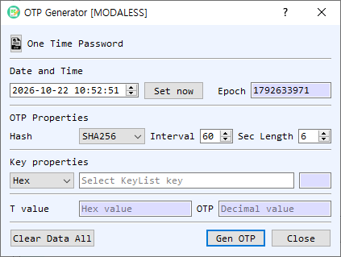

OTP Generator Dialog Guide
The OTP Generator creates a time-based one-time password (OTP) from a symmetric key, a selected time, a hash algorithm, and a time interval.

Figure 1. OTP Generator dialog. Set the timestamp and OTP parameters, provide the shared key, then generate the code.
Screen Areas
- Date and Time — Select the timestamp used for generation. Set now fills in the current local time.
- Epoch — Shows the selected date and time as Unix time in seconds. It updates when the date/time changes.
- Hash — Select the hash algorithm used to generate the OTP. The initial selection follows BerEditor's configured default hash.
- Interval — Set the time-step duration in seconds. The default is 60 seconds.
- Length — Set the number of decimal digits in the OTP. The default is 6 digits.
- Key properties — Select the key representation (Hex, String, or Base64) and enter the shared secret key. The adjacent field shows its length. If the key field is empty when generating, the dialog opens KeyList so you can select a symmetric key.
- T value — Displays the time-step value used for this generation, in hexadecimal.
- OTP — Displays the generated password as decimal digits.
- Gen OTP / Clear Data All / Close — Generate the OTP, clear the key and result fields, or close the dialog.
Generate an OTP
- Set Date and Time, or select Set now to use the current time. Confirm the corresponding Epoch value.
- Choose the Hash, Interval, and OTP Length expected by the other system or authenticator.
- Enter the shared secret in Key properties and choose its representation. If left blank, select a key from KeyList when prompted.
- Select Gen OTP. The time-step value and decimal OTP appear in their result fields.
Notes
- OTP verification requires matching parameters on both sides, including the shared secret, hash, time interval, and code length. Clock differences can cause a code to be rejected.
- The generated OTP is associated with the selected timestamp and interval; use Set now when generating a code for the current time.
- Treat the shared key as sensitive. The generation details, including the key and OTP, are also written to BerEditor's log.
- Clear Data All clears the key and result values. It does not change the selected time or OTP parameters.